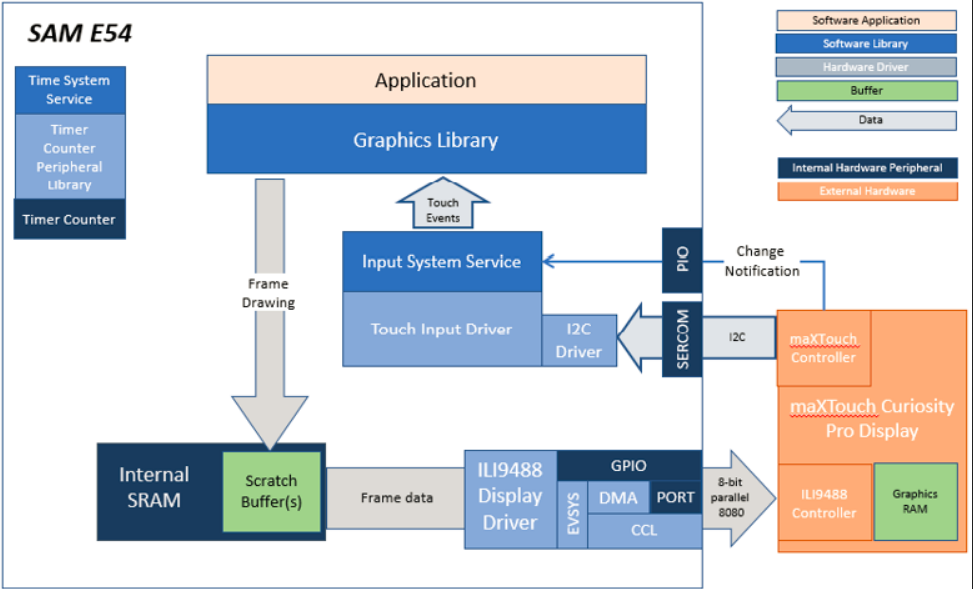
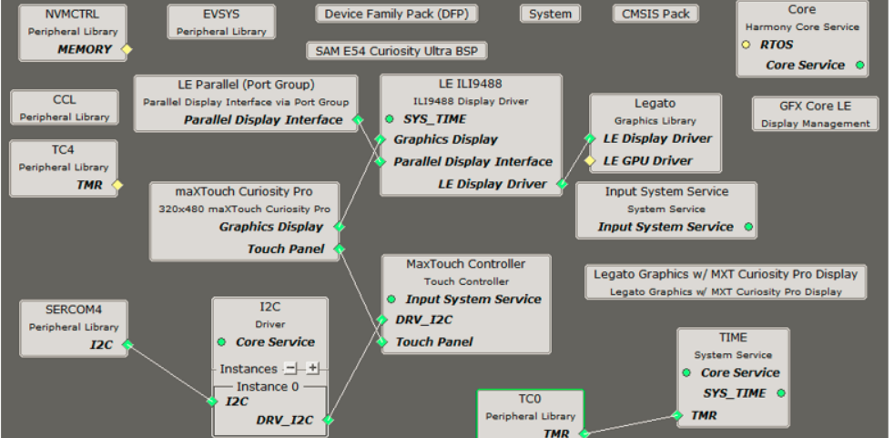
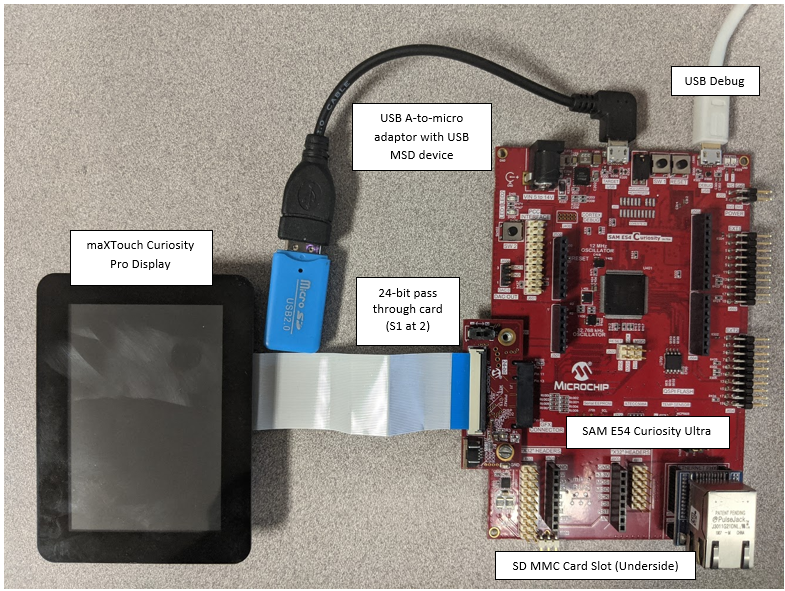
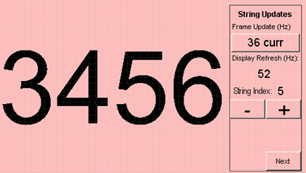
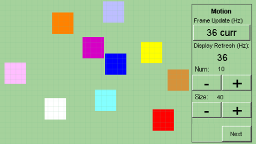

|
MPLAB® Harmony Graphics Suite
|
|
MPLAB® Harmony Graphics Suite
|

The application continuously uses the graphics library to render text, fill areas, and draw images to the screen. Once a layer is completely rendered to, the graphics library increments a layer swap counter. The application periodically (at 1 second intervals) samples the layer swap counter and calculates the difference from the previous sample. This difference is shown as the Frame Update Rate (Hz).
The block diagrams below show the various software and hardware blocks used in this application.
This configuration runs on the SAM E54 Curiosity Ultra board with a 24-bit passthrough GFX interface card and a maXTouch Curiosity Pro display. The maXTouch Curiosity Pro display has an ILI9488 display controller that is connected to the SAM E54 thru the port/GPIO peripheral using an 8-bit 8080/Parallel interface. The Legato graphics library draws the updated sections of the frame to an internal scratch buffer which is used by the ILI9488 display driver to update the ILI9488 display controller.
The ILI9488 display driver uses the DMA to drive command and data values out to the parallel PORT IO. Every time the DMA is done sending a word/byte, it uses the Event System (EVSYS) to send an event to the CCL peripheral. When the CCL receives the event, it generates an active low pulse that drives the write enable pin to the ILI9488 display controller. This combination of DMA-EVSYS-CCL works like an external bus interface for writing parallel data out thru the PORT pins. The other control signals DC# and CS# are controlled by the CPU in GPIO mode.
User touch input on the display panel is received thru the PCAP capacitive touch controller, which sends a notification to the Touch Input Driver. The Touch Input Driver reads the touch information over I2C and sends the touch event to the Graphics Library thru the Input System Service.

The Project Graph diagram shows the Harmony components that are included in this application. Lines between components are drawn to satisfy components that depend on a capability that another component provides.
Adding the SAM E54 Curiosity Ultra BSP and Legato Graphics w/ MXT Curiosity Pro Display Graphics Template component into the project graph.
This will automatically add the components needed for a graphics project and resolve their dependencies. It will also configure the pins needed to drive the external peripherals like the display and the touch controller.
For the DMA-CCL boosted setup, components TC4, CCL needs to be added.
Additional components to support QSPI and SST26 needs to be added and connected manually.
Some of these components are fine with default settings, while other require some changes. The following is a list of all the components that required custom settings.


To setup the CCL to clock the pixel data, make sure PB09 is set to CCL_OUT2

Instead of write strobe, make sure PB17 is setup as RSDC instead
The parent directory for this application is gfx/apps/legato_benchmark. To build this application, use MPLAB X IDE to open the gfx/apps/legato_benchmark/firmware/legato_bm_e54_cult_cpro_parallel.X project file.
The following table lists configuration properties:
| Project Name | BSP Used | Graphics Template Used | Description |
|---|---|---|---|
| legato_bm_e54_cult_cpro_parallel.X | SAM E54 Curiosity Ultra BSP | Legato Graphics w/ Xplained Pro Display | SAM E54 Curiosity Ultra w/ maXTouch Xplained Pro display via 8-bit parallel interface |
**_NOTE:_** This application may contain custom code that is marked by the comments // START OF CUSTOM CODE ... and // END OF CUSTOM CODE. When using the MPLAB Harmony Configurator to regenerate the application code, use the "ALL" merging strategy and do not remove or replace the custom code.
This section describes how to configure the supported hardware.
Configure the hardware as follows:
The final hardware setup should be:

Power up the board by connecting the power adapter to power connector or a powered USB cable to the DEBUG USB port on the board
On start-up, the application will display a splash screen.
After the splash-screen completes, the String Update benchmark screen is shown. In this screen, a counter is incremented at every application cycle. The screen demonstrates the rate at which the graphics library renders a string on the screen. This involves a fill operation that clears the background, lookup of the glyphs from the string library, and the drawing of the glyphs on the frame buffer.

The Frame Update (Hz) field shows the current or instantaneous rate at which the graphics library updates the label widget that shows the counter value. Touching the Frame Update value switches between the current value (curr) and the average (avg) value across 10 samples.
Touching the + and - buttons increases and decreases the size of the string, respectively.
Touching the Next button switches to the Motion and Fill benchmark screen. In this screen, squares are showing moving across the screen. The Frame Update value is the rate at which the graphics library is able to render all the squares on the screen at their new positions. This involves a fill operation of the background color at the old location of the squares and a fill of the squares colors at the new position

The number and size of the squares can be increased and decreased using the + and - buttons. If the maximum or minimum size is reached, touching + or -, respectively, will switch to a full screen fill of alternating colors.
Touching the Next button transitions to the Image Decode and Rendering screen. In this screen, two images of the same size are alternately rendered between application cycles. This involves a fill of the background color, decode and conversion of the image to the frame buffer format, and the drawing of the image to the frame buffer. The Frame Update value is the rate at which the graphics library is able to render an image on the screen.

The size of the images can be increased and decreased using the + and - buttons.
Touching the **<** and **>** buttons switches between the various image formats. The formats that are supported are PNG, RAW RLE 16-bit, RAW 16-bit and JPG 24-bit.
 1.8.18
1.8.18